Home
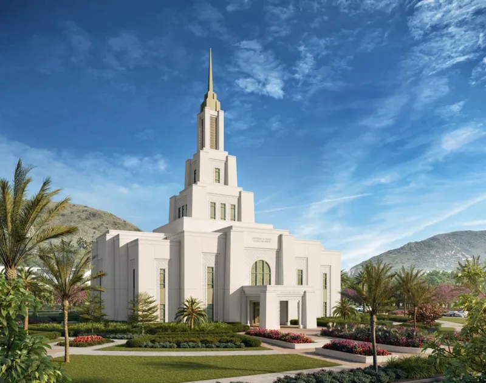
Mexico City Benemerito Temple
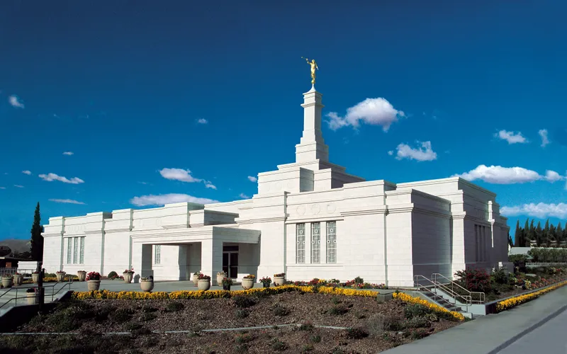
Ciudad Juarez Temple
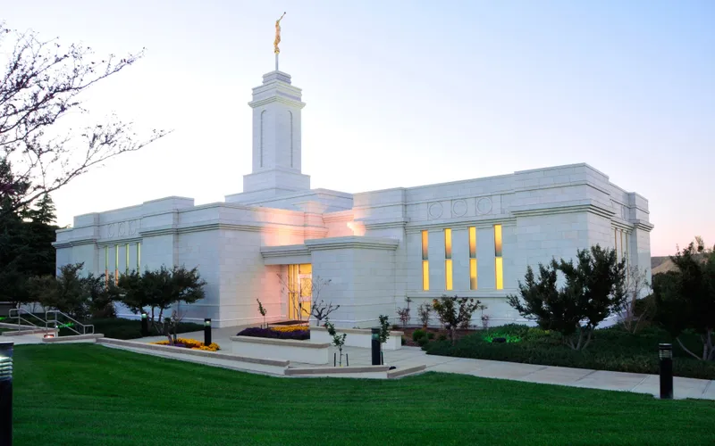
Colonia Juarez Temple
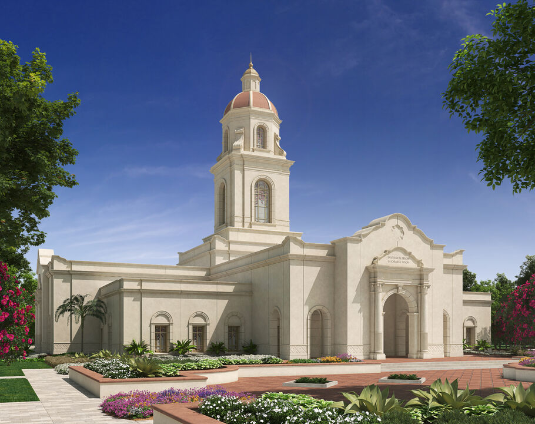
Cuernavaca Temple
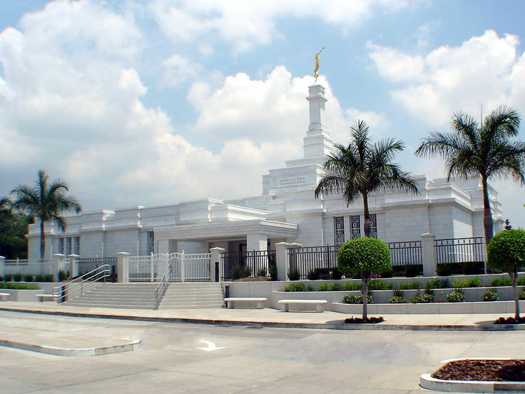
Guadalajara Temple
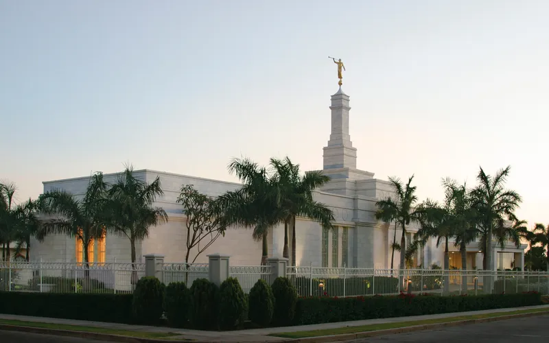
Hermosillo Temple
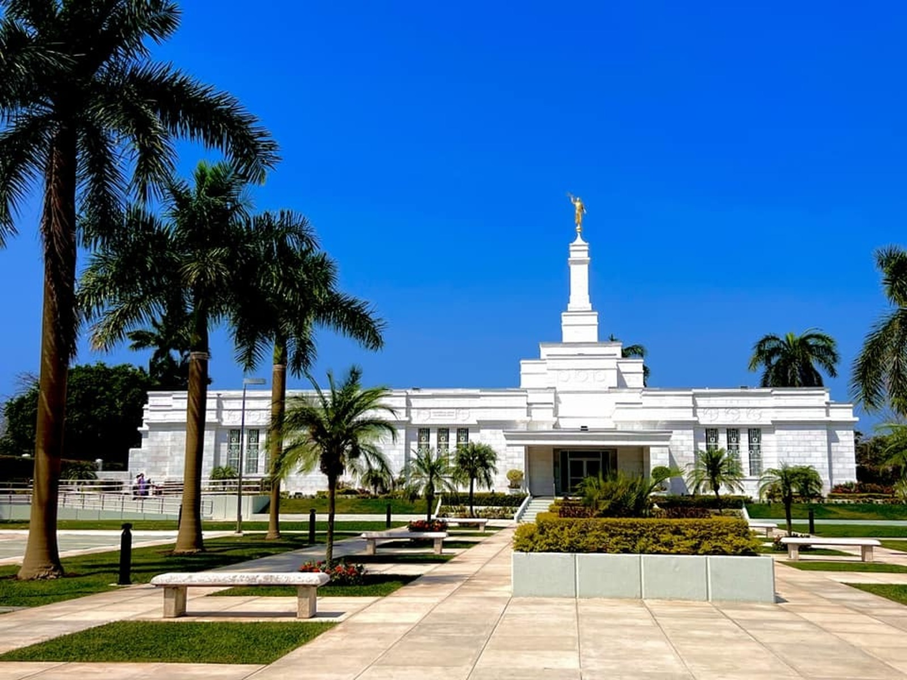
Merida Temple
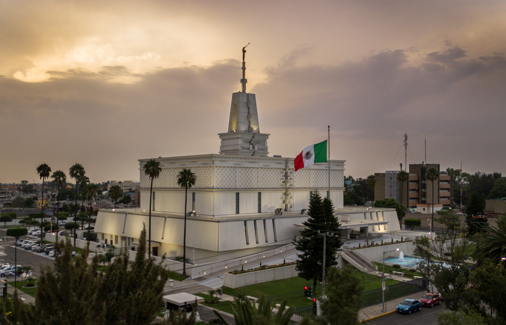
Mexico City Temple
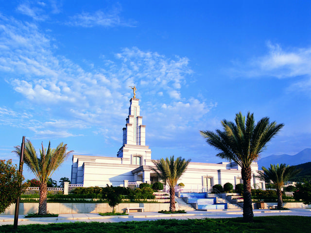
Monterrey Temple
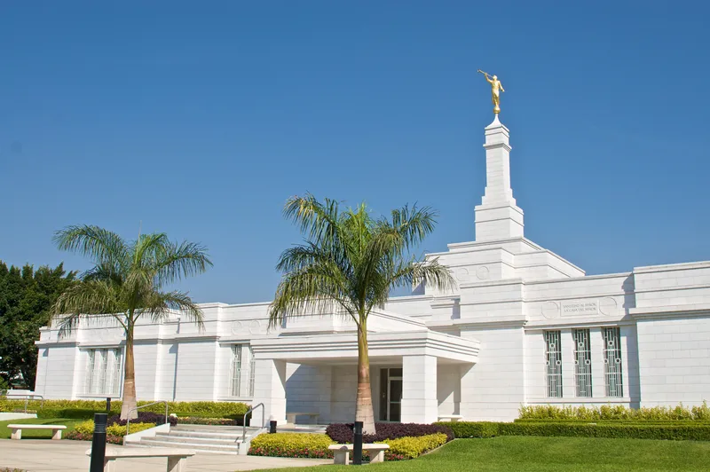
Oaxaca Temple
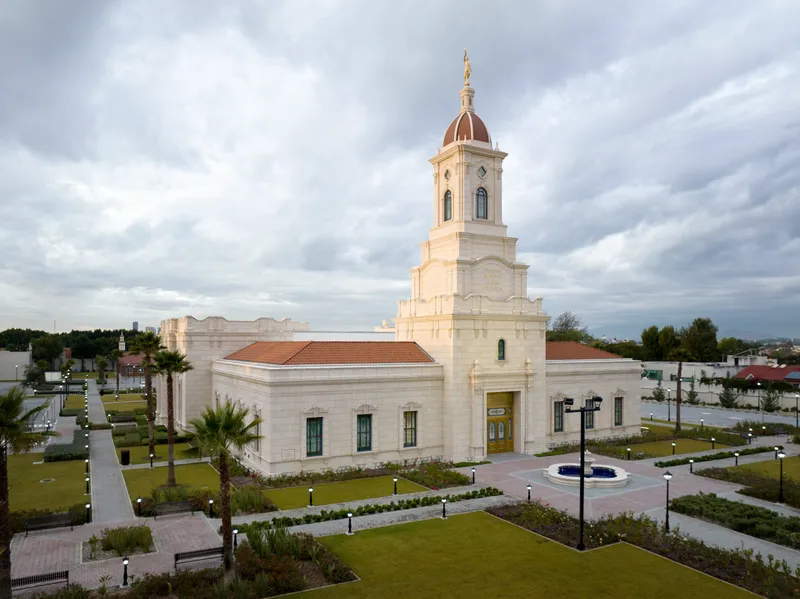
Puebla Temple
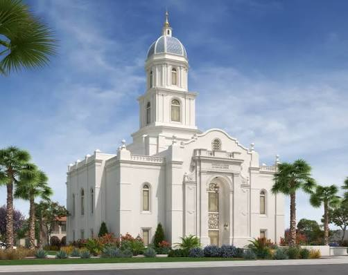
Queretaro Temple
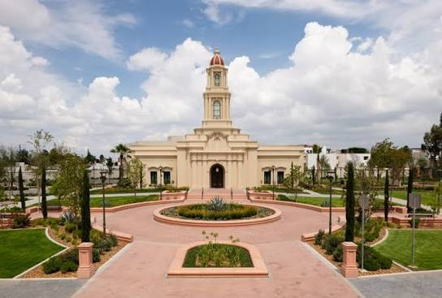
San Luis Potosi Temple
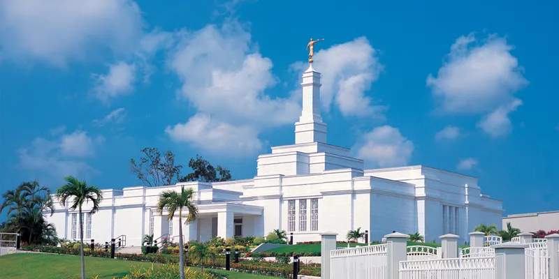
Tampico Temple
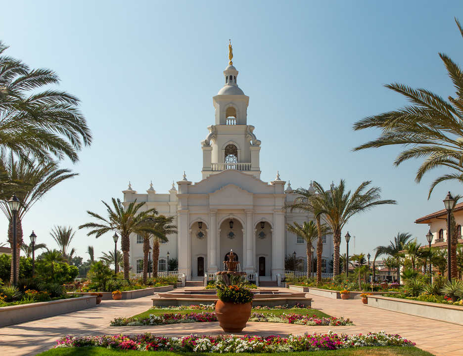
Tijuana Temple
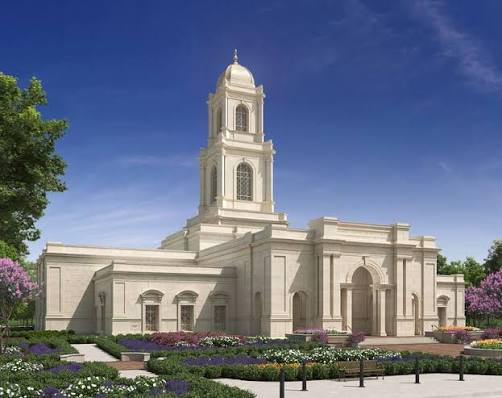
Toluca Temple
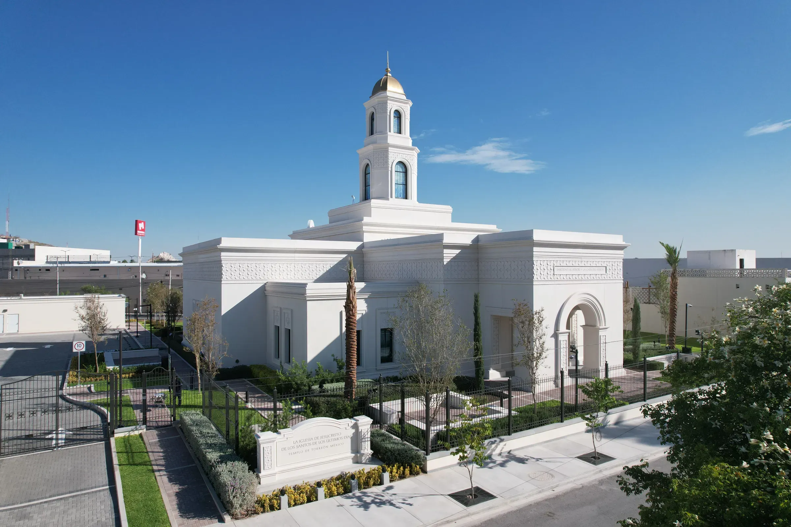
Torreon Temple
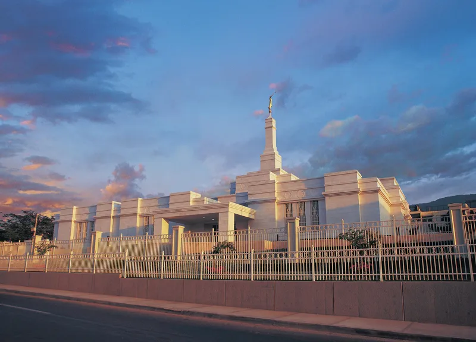
Tuxtla Gutierrez Temple
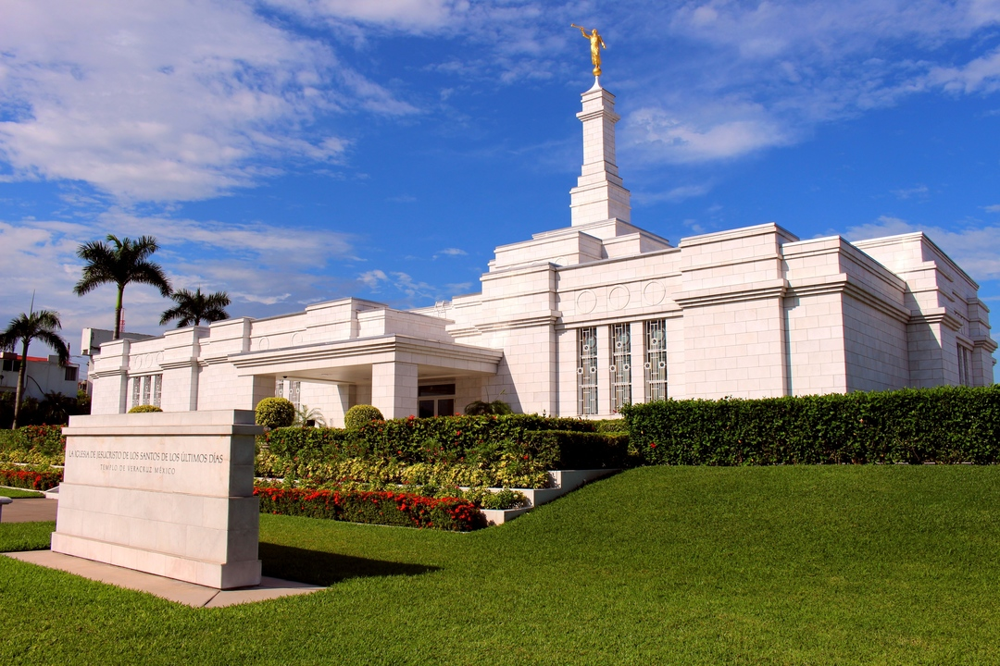
Veracruz Temple
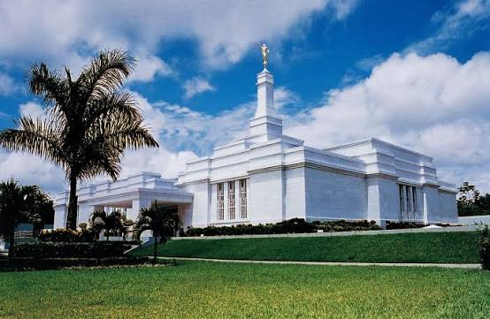
Villahermosa Temple
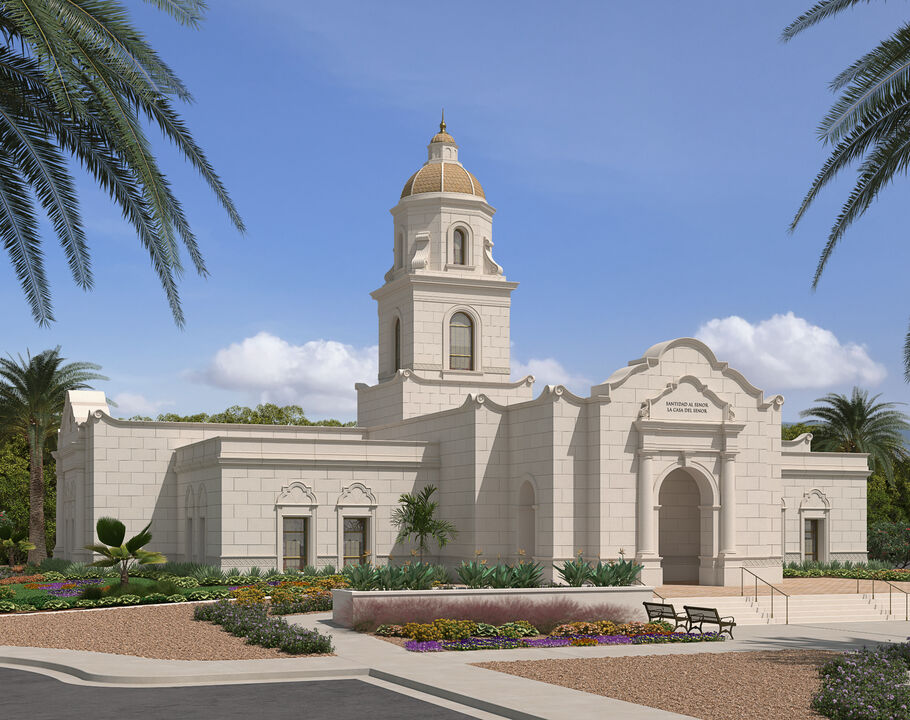
Culiacan Temple